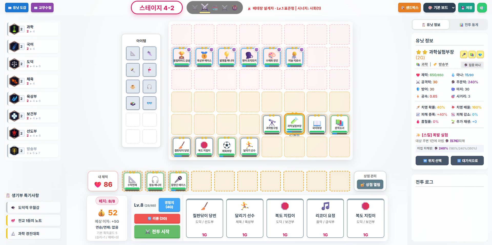

내가 직접 결정하는 것
- 상점에서 어떤 학생을 살지
- 누구를 앞줄·뒷줄 어디에 놓을지
- 어떤 과목·동아리 시너지를 맞출지
- 누구에게 어떤 아이템을 줄지
- 증강체와 매점 보상 중 무엇을 고를지
CLASSROOM TACTICS · BEGINNER GUIDE
롤토체스나 오토배틀러를 해보지 않았어도 괜찮습니다. 내가 할 일은 학생을 고르고 자리를 정하는 것까지, 전투는 학생들이 자동으로 합니다.
매 라운드 준비 시간에 반을 만들고, 자동 전투 결과를 바탕으로 더 강한 반을 만드는 생존 전략 게임입니다.
처음부터 모든 숫자를 읽을 필요는 없습니다. 아래 번호 순서만 알면 첫 전투를 시작할 수 있습니다.

현재 켜진 과목·동아리 효과와 선택한 증강체를 봅니다.
지금이 몇 번째 묶음의 몇 번째 라운드인지 보여줍니다.
가방 속 아이템을 학생에게 끌어다 장착합니다.
위쪽은 상대, 아래쪽은 내 진영입니다. 실제 배치는 내 쪽 3줄에 합니다.
학생을 사고 보관하며, 경험치·리롤·전투 시작을 조작합니다.
학생 능력치와 스킬을 보고, 전투 뒤에는 피해·버팀·회복과 전투 복기를 확인합니다.
완벽한 조합보다 ‘구매 → 배치 → 시작’을 한 번 직접 해보는 것이 먼저입니다.
화면 아래의 학생 카드를 누르면 골드를 내고 대기석으로 데려옵니다. 카드의 1G~5G는 가격이자 코스트입니다.
학생을 클릭한 뒤 빈 칸을 클릭하거나, 직접 끌어 놓으세요. 보드에는 현재 레벨만큼 배치할 수 있습니다.
체력·방어가 높은 학생은 앞쪽, 사거리가 길거나 공격 중심인 학생은 뒤쪽이 기본입니다.
왼쪽 시너지에 색이 켜졌다면 효과가 활성화된 것입니다. 아이템이 있다면 주력 학생에게 장착해도 좋습니다.
이제 학생들이 자동으로 싸웁니다. 누가 너무 빨리 쓰러지는지, 스킬이 누구에게 닿는지만 보세요.
좋은 반은 비싼 학생만 모은 반이 아니라, 별·시너지·아이템·배치가 서로 맞는 반입니다.
숫자가 높을수록 대체로 기본 성능이 좋고 더 높은 레벨에서 잘 등장합니다. 하지만 코스트만으로 승부가 정해지지는 않습니다.
같은 학생 3명은 2성, 총 9명은 3성이 됩니다. 별이 오르면 능력치와 스킬 성능이 크게 강해집니다.
같은 과목이나 동아리 학생을 기준 인원 이상 배치하면 효과가 켜집니다. 왼쪽 패널의 다음 숫자가 목표 인원입니다.
학생 한 명은 최대 3칸을 씁니다. 기본 아이템 두 개를 조합하면 더 강한 완성 아이템이 됩니다.
공격하거나, 맞거나, 시간이 흐르면서 유닛 특성에 맞게 마나가 찹니다. 가득 차면 스킬을 자동 사용합니다.
한 판 동안 계속 적용되는 특별 규칙입니다. 현재 반과 잘 맞는 효과를 고르되, 설명의 조건을 꼭 확인하세요.
자동 전투라도 준비 화면에서 첫 교전과 위험 범위를 미리 읽고, 결과 화면의 실제 기록으로 다음 배치를 고칠 수 있습니다.
내 보드의 학생을 누르면 가장 가까운 예상 첫 대상과 그 학생을 주시하는 적 수가 표시됩니다. 도발·대시·전투 중 이동에 따라 실제 대상은 달라질 수 있습니다.
광역 범위가 있는 학생은 첫 대상 주변의 예상 영향 칸도 표시됩니다. 핵심 딜러가 상대 광역에 함께 맞지 않도록 간격을 벌려 보세요.
결과창과 오른쪽 전투 통계에서 최고 피해·버팀·회복, 첫 이탈 시간, 스킬 사용 횟수와 한 줄 조언을 확인합니다.
당장 상점을 많이 바꾸면 빠르게 강해질 수 있지만, 저축 이자와 레벨업 기회를 잃습니다.
2-3이라면 두 번째 월드의 세 번째 라운드입니다. 특별 선택과 PVE가 반복되는 위치만 기억하세요.
실버 → 골드 → 프리즘 등급의 증강체를 하나씩 고릅니다. 조건이 현재 반과 맞는지 확인하세요.
매점 선택이 열립니다. 눈앞의 전투뿐 아니라 완성하려는 반의 방향을 생각해 고릅니다.
PVE 몬스터와 싸웁니다. 기본 아이템 2개 또는 같은 재료 가치의 완성 아이템 1개를 무작위로 받습니다. 후반에는 예고 칸을 보고 배치를 대응해야 합니다.
친구를 만나기 전의 입문 PVE입니다. 기본 아이템을 모으고 배치를 익힌 뒤 2-1부터 유저 전투가 시작됩니다.
책가방 골렘이 가로 3칸을 내려칩니다. 앞줄을 한곳에 몰지 말고, 예고 중 이동하면 강타를 피할 수 있습니다.
시험 감독 드론이 먼 학생을 표식하고 주변에도 피해를 줍니다. 후열 학생 사이를 한 칸 이상 벌려 피해를 나누세요.
야간 순찰 로봇이 학생이 가장 많은 줄의 스킬을 잠시 막습니다. 주문 중심 학생을 서로 다른 줄에 나눠 놓으세요.
싱글과 멀티의 차이: 싱글은 바로 AI 상대와 연습할 수 있고, 멀티는 2~6명이 같은 라운드 시간에 맞춰 진행합니다. 준비가 끝나면 전투는 자동이며, 패배 시 기본 피해와 살아남은 적 수 등에 따라 체력이 줄어듭니다.
방을 만든 사람이 6자리 코드를 알려 주고, 모두 준비한 뒤 시작합니다. 1-1~1-3 PVE가 끝나면 2-1부터 유저 전투가 시작됩니다.
다음 상대 후보 2명과 상대의 최근 제출 보드를 봅니다. 실시간 배치가 아니므로 후보를 모두 대비하는 배치가 안전합니다.
전투는 30초이며 배속이 없습니다. 전원이 보드를 제출하면 곧바로 시작하고, 모두 일찍 끝나면 남은 시간을 2초로 줄여 진행합니다.
체력이 0이 되어도 방을 나가지 않고 모든 생존자의 최근 보드와 순위를 관전할 수 있습니다.
👋·👍·😮·😅·🔥·👏 중 하나를 보내 친구와 짧게 반응할 수 있습니다. 연속 도배는 자동으로 제한됩니다.
새로고침이나 잠깐의 연결 끊김은 저장된 세션으로 복원합니다. 종료 뒤 방장은 같은 코드로 재대결을 열 수 있습니다.
완료된 멀티게임의 탑3·1등 확률, 유닛·시너지·덱 조합과 보드 비용 통계는 모든 플레이어가 함께 봅니다.
왼쪽 행동이 틀렸다는 뜻은 아닙니다. 판단이 어려울 때는 오른쪽을 기본값으로 삼으면 안전합니다.
역할과 시너지가 끊겨 각자 따로 싸움
탱커가 시간을 벌고 딜러가 안전하게 공격
원거리 학생까지 빠르게 공격받음
상대 암살·광역 스킬을 보며 한 칸씩 조정
이자와 레벨업 기회를 함께 잃음
정말 필요한 쌍이 있을 때만 계획적으로 사용
현재 전투에서 쓸 수 있는 힘을 포기
공격 아이템은 딜러, 방어 아이템은 탱커부터
대기석만 차고 별을 올리지 못함
같은 학생 3명을 모을 가능성을 높임
같은 약점이 다음 전투에도 반복
쓰러진 순서를 보고 배치·아이템·별 중 하나 수정
아래 일곱 항목만 확인한 뒤 전투를 시작하세요. 처음에는 완벽한 정답보다 반복이 중요합니다.
아니요. 전투 시작 뒤 이동·공격·스킬은 자동입니다. 준비 시간의 구매, 배치, 시너지, 아이템 선택이 핵심입니다.
이미 가진 학생과 같은 학생, 현재 켜진 시너지와 같은 학생부터 보세요. 그래도 모르겠다면 앞줄 한 명과 뒷줄 한 명을 균형 있게 삽니다.
아닙니다. 체력이 남아 있는 동안 여러 번 고칠 기회가 있습니다. 누가 먼저 쓰러졌는지만 보고 한 가지를 바꿔 보세요.
결과창의 전투 복기에서 첫 이탈 시간과 피해·버팀·회복 1위를 봅니다. 처음에는 가장 빨리 쓰러진 학생의 위치 하나만 바꿔도 충분합니다.
게임 상단의 ‘📖 교무수첩’을 열면 학생 도감, 스킬, 시너지, 아이템 등 상세 정보를 볼 수 있습니다.